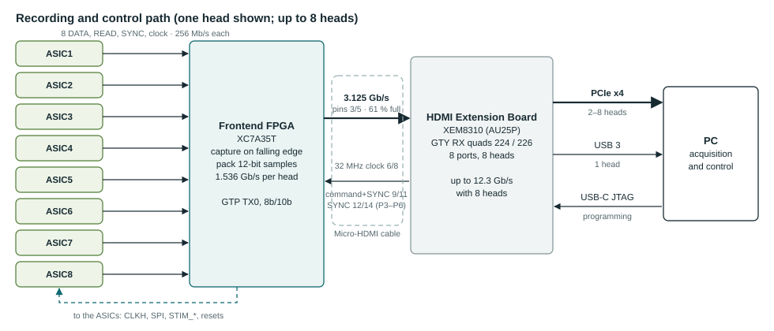

Datasheet · Section 5 · Draft V1
5Signals and timing
In short. Each ASIC sends its recordings to the Frontend on 11 wires. The Frontend packs the data from all eight ASICs into one fast stream and sends it down the cable on one wire pair. The PC end sends a shared clock and commands back up the cable, so every ASIC in every head samples at the same moments.
5.1Recording path and data rates

Each ASIC returns 11 lines to the Frontend's FPGA: 8 data lines, a READ marker, a SYNC marker, and its own 32 MHz clock. The ASIC works in repeating frames of 1,024 clock ticks. A frame has 16 time slots of 64 ticks. In each slot, 48 ticks carry measurements (four 12-bit numbers per data line, interleaved) and 16 are padding. Every channel is therefore measured 31,250 times per second (31.25 kS/s, thousand samples per second).
The table gives the data rate in megabits (Mb/s) or gigabits (Gb/s) per second. “Raw” counts every bit on the wires, padding included; “measurements only” counts just the 12-bit results, packed tightly.
| Raw rate on the wires | Measurements only (12-bit, packed) | |
|---|---|---|
| One ASIC | 256 Mb/s | 192 Mb/s |
| One head (8 ASICs) | 2.048 Gb/s | 1.536 Gb/s |
| Full system (8 heads) | 16.4 Gb/s | 12.3 Gb/s |
Each head sends its data down the cable on one wire pair, using the Frontend FPGA's built-in high-speed transmitter (called a GTP). The link adds 2 check bits to every 8 data bits (“8b/10b coding”), so 80 % of the line rate carries data:
| Line rate | Usable for data | Raw stream | Packed measurements | Made from the 125 MHz clock by |
|---|---|---|---|---|
| 2.5 Gb/s | 2.0 Gb/s | does not fit | 77 % full | PLL at 2.5 GHz, divided by 2 |
| 3.125 Gb/s | 2.5 Gb/s | 82 % full | 61 % full | PLL at 3.125 GHz, divided by 2 |
This is the highest rate within a High Speed HDMI cable's 3.4 Gb/s per wire pair, which leaves headroom: the raw stream fills 82 %, a packed stream 61 %. The Frontend makes it from its 125 MHz oscillator: a PLL (a circuit that multiplies a clock) runs at 3.125 GHz and is divided by 2.
Getting the data into the PC. Eight heads deliver about 12.3 Gb/s in total. USB 3 on the XEM8310 moves “over 350 MiB/s” (about 2.9 Gb/s; Opal Kelly XEM8310 product page), so USB can carry one head (packed 1.536 Gb/s, 52 %) but not two (3.07 Gb/s). Two or more heads need the PC-slot (PCIe x4) link.
Design details receiver clocks
The XEM8310's on-module 125 MHz oscillator (GTY quad 225 REFCLK0) clocks the receivers in quads 224 and 226 (AMD UG578 sharing). The two ends run from independent oscillators, so the receiver uses clock correction. The PCIe throughput is not verified yet (it needs the Vivado design and firmware).
5.2Capturing ASIC data
Each ASIC sends its own clock along with its data, and the Frontend reads each data bit when that clock falls (the ASIC designer's guidance). To do this reliably, each ASIC's clock enters an FPGA pin built for clock signals. For six of the eight ASICs, all 11 lines sit in the same pin group (bank) as their clock, which is the simple case. ASIC3 and ASIC7 each have four lines in other banks, so their clock must be spread through a chip-wide clock buffer; at 32 MHz this should work, but it must be confirmed in the FPGA tools once the ASIC's output timing is known.
Design details banks and clock pins
Every ASIC's returned clock is on a clock-capable ball (MRCC or SRCC). ASIC3 and ASIC7 each have four inputs outside the clock's bank 34 (ASIC3: DATA6–8 and READ in bank 15; ASIC7: DATA6, DATA8 and READ in bank 14, DATA7 in bank 15) and need a global clock buffer (BUFG). Checked against Frontend schematic V57 and pin map V8.
5.3Clocks and synchronization
A clock is a steady on-off signal that sets the pace of a circuit. The system uses five:
| Clock | Where it comes from and what it is for |
|---|---|
| 32 MHz system clock | Made on the XEM8310 module and sent to each head on cable pins 6/8. It is the common time base, so all heads record in step. |
| Command + SYNC | Commands from the PC end, on cable pins 9/11, sent at 64 Mb/s (two bits per tick of the 32 MHz clock, “DDR”). They include a SYNC marker that lines up the start of recording. Ports 3–6 also have a separate SYNC pair on pins 12/14. |
| CLKH | The clock the Frontend sends to the ASICs. One line drives ASIC1–4 (BOARD1_CLK), another drives ASIC5–8 (BOARD3_CLK). |
| 125 MHz (Y1) | An oscillator on the Frontend; the reference for the high-speed cable transmitter |
| 25 MHz, 1.8 V (Y2) | An oscillator on the Frontend; a clock for the FPGA's own logic |
The Frontend program should make CLKH from the 32 MHz cable clock. Then all 64 ASICs sample in step.
5.4Configuration and stimulation control
The FPGA sets up each ASIC through a simple serial link called SPI (serial peripheral interface): one clock line, data lines, and a “latch” line that tells the chip to apply the new settings. Stimulation is controlled by separate lines. Some lines go to one ASIC, others are shared:
| Line | ASICs on each line |
|---|---|
| Settings data lines SPI_DL and SPI_DR (never shared) | 1 |
| Settings clocks (one per ASIC board) | 2 |
| Settings latches (one per ASIC board) | 2 |
| CLKH (ASIC clock) | 4 |
| Stimulation and reset lines: STIM_EN, STIM_START, STIM_CHB, STIM_CLK, CHIP_RESET, FE_RESET, IMP_TST | 8 |
Each of the four ASIC boards in a head holds two ASICs and has its own settings clock and its own latch. This is how the ASIC designer drives the chips: one clock and one latch per board. A head therefore has four settings clocks and four latches. Up to pin map V7 the two bottom boards shared one latch (three latches in all); pin map V8 (19 Nov 2026) split it, using the one contact that was still spare.
Design details the four settings clocks and four latches
| ASIC board (chips) | Line | FPGA ball | Frontend contact | Port pin | Pull-down |
|---|---|---|---|---|---|
| Port J4, bottom (ASIC1, 2) | BOARD1_SPI_CLK | D10 | J2.52 | J4.63 | R22 |
BOARD1_SPI_LATCH | D11 | J2.48 | J4.61 | R18 | |
| Port J4, top (ASIC3, 4) | ASIC3_4_TOP_SPI_CLK | P3 | J2.37 | J4.72 | R24 |
ASIC3_4_TOP_SPI_LATCH | R7 | J2.35 | J4.70 | R26 | |
| Port J3, bottom (ASIC5, 6) | BOARD3_SPI_CLK | V8 | J2.13 | J3.63 | R23 |
BOARD3_SPI_LATCH | V14 | J1.36 | J3.61 | R28 | |
| Port J3, top (ASIC7, 8) | ASIC7_8_TOP_SPI_CLK | N4 | J2.24 | J3.72 | R25 |
ASIC7_8_TOP_SPI_LATCH | L4 | J2.26 | J3.70 | R27 |
Each line has one FPGA ball, one contact, one port pin and one 10 kΩ pull-down on the FPGA-LDO board, which holds it low until the FPGA drives it. BOARD3_SPI_LATCH is new in pin map V8: on the FPGA-LDO board it runs 31.9 mm from contact J1.36 along the west and north board edges to port pin J3.61. Ball V14 is an ordinary input/output pin in the start-up mode this board uses (the FPGA loads its program from the flash memory over SPI); in the pin file it is an output at the 1.5 V signal level. Nothing has been measured on this line yet.
The seven lines shared by all eight ASICs have no buffer chip in between. They all change slowly (the stimulation clock is about 32–60 kHz in the ASIC designer's examples), so this should be fine, but their signal edges should be checked on the first assembled head. The FPGA cannot read the settings back from the ASICs.